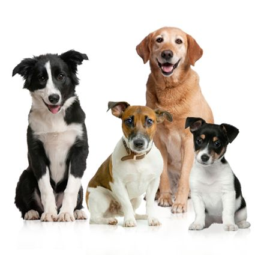

Huellitas con Amor es un lugar donde los lomitos y michis rescatados encuentran una nueva oportunidad de ser felices. Si sueñas con adoptar y darle mucho amor a un peludito, aquà puedes conocer a los que están listos para robarte el corazón. ¡Nos mueve el cariño, las patitas y las segundas oportunidades!
🐶🐱 ¡Adopta, cambia una vida y llena la tuya de amor peludo! 💖🐾
Adoptar mascotas es un acto de amor que no solo transforma la vida de un animal, sino que también enriquece la vida del adoptante y contribuye al bienestar de la comunidad. 😺🐾🐶 Nosotros podemos ayudarte a buscar a un amiguito que pueda acompañarte en las buenas y en las malas. Recuerda que adoptar es un acto de amor pero también debe ser un acto responsable. 😺🐾🐶